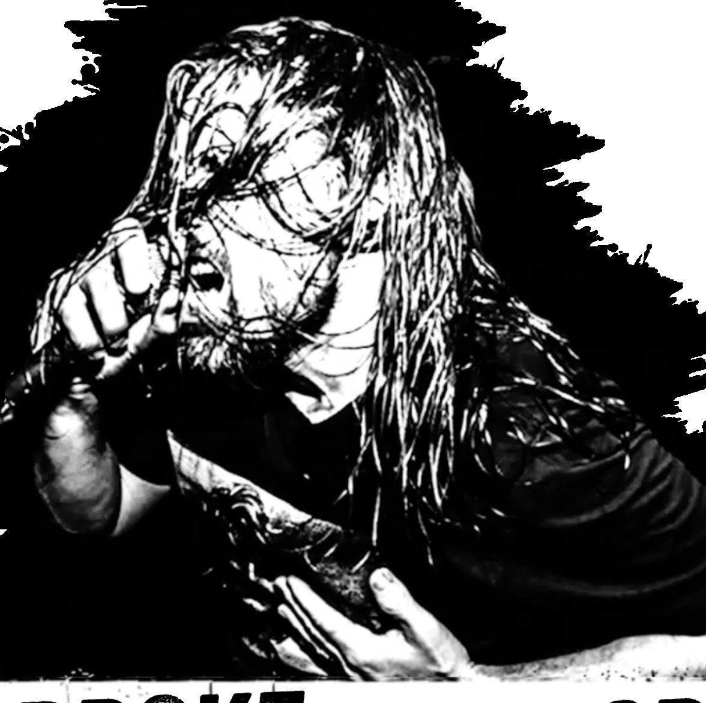

Interview
BrokeSingerCris: Wenn aus Covers plötzlich ein internationales Skatepunk-Projekt wird
BrokeSingerCris: When covers suddenly turn into an international skate-punk project

Es gibt Instagram-Accounts, über die scrollt man drüber, nickt kurz innerlich und ist nach fünf Sekunden wieder weg.
Und dann gibt es Accounts, bei denen man eigentlich nur mal eben einen Song anchecken wollte... und plötzlich hängt man eine halbe Stunde später immer noch am Handy.
Genau so ging es mir mit BrokeSingerCris.
Wer jetzt denkt: "Ach komm, noch ein Typ mit Akustikgitarre, der Punkklassiker nachspielt", liegt ziemlich weit neben der Spur.
Denn Cris macht zwar Coverversionen, aber eben nicht die üblichen Verdächtigen, die schon tausendmal durchgenudelt wurden. Stattdessen gräbt er Songs aus, bei denen selbst Szenekenner manchmal kurz nachdenken müssen. Und als wäre das nicht schon nerdig genug, holt er sich regelmäßig Sänger und Musiker bekannter Skatepunk-Bands mit ins Boot.
Beim Pulley-Klassiker "Gone" sind unter anderem Mitglieder von The Decline, Strike 12, Fine Dining, Sic Waiting und Ex Chaser dabei. Auch Musiker von Authority Zero, Ten Foot Pole und vielen anderen tauchen immer wieder in seinen Videos auf.
Da musste ich natürlich wissen, wie aus so einer Idee eigentlich so ein kleines internationales Skatepunk-Ding wird.
Also habe ich Cris angeschrieben.
"Warum eigentlich kein WIZO?"
Eines seiner aufwendigsten Projekte ist ein Tribute an den legendären Sampler Short Music for Short People.
Sechs Songs, jede Menge Gastmusiker und alles zusammen in gerade einmal rund drei Minuten.
Nur eine Band fehlt.
WIZO.
Das konnte ich natürlich nicht einfach so stehen lassen.
RandaleFUNK: Auf deinem Short Music for Short People-Tribute... warum eigentlich kein WIZO? Deutschland ist kurz davor, offiziell Beschwerde einzulegen.
Cris lacht über die Frage und erklärt, dass das Projekt ursprünglich deutlich größer geplant war.
Er habe zunächst sieben oder acht Lieblingssongs ausgewählt, dann aber gemerkt, wie schwierig es sei, Musiker für 30-Sekunden-Aufnahmen zu gewinnen und anschließend alles sauber zusammenzumischen.
WIZO habe es tatsächlich unter seine persönlichen Top Ten geschafft.
Am Ende mussten aber Entscheidungen getroffen werden - und AFI sowie Fury 66 waren ihm einfach noch ein Stück wichtiger.
"Warum klingt Rancid so... gebügelt?"
Auch sein Cover von Tattoo hat mich kurz aus der Kurve getragen.
Nicht, weil es schlecht wäre.
Sondern weil es für einen Rancid-Song fast schon verdächtig sauber klingt.
RandaleFUNK: Wolltest du Tattoo bewusst so glatt und sauber anlegen oder kannst du einfach nicht richtig schön verrotzt singen?
Für Cris war die Antwort ziemlich eindeutig.
Er wolle nie versuchen, das Original eins zu eins nachzubauen.
Sein Ziel sei immer, einem Song eine neue Perspektive zu geben.
Dass der Refrain so sauber klingt, liege unter anderem an Jason Devore von Authority Zero, der genau diesen Charakter in den Song gebracht habe.
Wer sich seine anderen Covers anhöre, merke allerdings schnell, dass er durchaus auch anders könne.
Ein Pulley-Song, an den man sich erstmal rantrauen muss
Als alter Skatepunk-Nerd musste ich natürlich auch über Gone sprechen.
Für mich ist das einer dieser Songs, bei denen sofort Bilder im Kopf angehen: Skateparks, Sommer, kaputte Knie und Shirts, die mindestens zwei Nummern zu groß waren.
Gerade deshalb finde ich die Nummer mutig.
Nicht, weil man sie nicht covern dürfte.
Sondern weil man sich als Skatepunk-Fan automatisch fragt, ob so ein Brett als Akustikversion überhaupt funktionieren kann.
Interessanterweise war Gone sogar vor den Akustik-Covern da.
Die Idee sei gewesen, pro Band genau einen Song auszuwählen - möglichst keinen offensichtlichen Hit.
Bei Pulley wollte Cris deshalb ursprünglich If und Cashed In umgehen.
Gemeinsam mit Joe von Strike 12 entschied er sich schließlich sogar für ein alternatives Tuning, das besser zu seiner Stimme passte.
Die Verbindung zu Pulley reicht übrigens bis ins Jahr 2008 zurück.
Seitdem ist der Kontakt nie ganz abgerissen und einige der Musiker waren später bereit, bei seinen Projekten mitzuwirken.
Besonders Mike Harder gehört heute zu seinen wichtigsten Partnern bei den Akustik-Covern.
Warum macht man sich diesen Wahnsinn überhaupt?
Irgendwann musste natürlich die große Frage auf den Tisch.
Warum steckt jemand so viel Zeit, Energie und wahrscheinlich auch Nerven in Covers, Gastmusiker, Studioaufnahmen und den ganzen organisatorischen Rattenschwanz?
Instagram-Ruhm?
Monetarisierung?
Oder doch ein kleiner, liebevoll gepflegter Narzissmus mit Punkrock-Filter?
Die Antwort fiel erstaunlich bodenständig aus.
Cris singt seit rund 25 Jahren in Bands.
Was ihn immer frustriert habe:
Alle paar Jahre einmal ins Studio.
Mehr nicht.
Während der Corona-Zeit wollte er das ändern.
Er fing an, Freunde anzuschreiben, gemeinsam Songs aufzunehmen und sich musikalisch auszutoben.
Als die Pandemie vorbei war, hörte er einfach nicht mehr auf.
Heute beschreibt er das Projekt als "sein kleines Baby".
Nicht wegen Geld.
Denn verdient habe er damit bisher praktisch nichts.
Sondern weil er Musik machen, sich weiterentwickeln und mit Menschen zusammenarbeiten möchte, die dieselbe Leidenschaft teilen.
Einer der schönsten Momente sei für ihn, wenn Musiker, zu denen er früher aufgeschaut habe, seine Cover hören, sich darüber freuen und ihm das auch zeigen.
Und ja...
Natürlich spielt auch die Liebe zum 90er-Skatepunk eine ziemlich große Rolle.
Und was ist eigentlich typisch deutsch?
Zum Abschluss musste natürlich noch eine Frage raus, die offiziell völlig unwichtig ist, in Wahrheit aber alles entscheidet.
RandaleFUNK: Was ist eigentlich typisch deutsch?
Seine spontane Antwort:
"Well... I work at Trader Joe's, so I'd say Trader Joe's is German."
Okay.
Damit hatte ich jetzt wirklich nicht gerechnet.
Ehrlich gesagt hatte ich eher mit Bier, Lederhosen oder David Hasselhoff gerechnet.
Fazit
BrokeSingerCris macht keine Cover, weil ihm die Ideen für eigene Songs ausgegangen sind.
Er baut kleine Liebeserklärungen an eine Szene, die ihn seit Jahrzehnten begleitet.
Mit Gastmusikern, ungewöhnlichen Songauswahlen und einer Menge Herzblut zwischen Skatepunk-Nostalgie und internationalem Freundeskreis.
Wer mit Skatepunk der 90er groß geworden ist, sollte seinem Account definitiv mal einen Besuch abstatten.
Nicht, weil dort jemand den nächsten Algorithmus-Hit jagt oder glaubt, die Originale toppen zu müssen.
Sondern weil man bei jedem Song hört, dass hier jemand genau dieselbe Musik liebt wie wir - und einfach Bock hat, diese Begeisterung mit anderen zu teilen.
BrokeSingerCris im Netz
Prost.
There are Instagram accounts you scroll past, give a tiny internal nod, and forget about five seconds later.
And then there are accounts where you only wanted to check out one quick song... and suddenly you are still glued to your phone half an hour later.
That is exactly what happened to me with BrokeSingerCris.
If you are now thinking, "Oh great, another guy with an acoustic guitar playing punk classics," you are pretty far off track.
Sure, Cris does cover versions. But not the same obvious suspects that have already been dragged through every basement and campfire. Instead, he digs up songs where even scene nerds sometimes need a second to place them. And because apparently that still was not nerdy enough, he regularly brings in singers and musicians from well-known skate-punk bands.
On the Pulley classic "Gone," for example, members of The Decline, Strike 12, Fine Dining, Sic Waiting and Ex Chaser are involved. Musicians from Authority Zero, Ten Foot Pole and plenty of others also keep showing up in his videos.
So of course I had to know how an idea like that turns into this small international skate-punk thing.
I wrote to Cris.
"Why no WIZO?"
One of his most elaborate projects is a tribute to the legendary compilation Short Music for Short People.
Six songs, a whole pile of guest musicians, and all of it crammed into roughly three minutes.
Only one band is missing.
WIZO.
Obviously I could not just let that slide.
RandaleFUNK: On your Short Music for Short People tribute... why no WIZO? Germany is about one step away from filing an official complaint.
Cris laughs at the question and explains that the project was originally planned to be much bigger.
At first he picked seven or eight favorite songs, but then realized how hard it is to get musicians to record 30-second parts and then mix everything properly afterward.
WIZO actually made it into his personal top ten.
In the end, decisions had to be made - and AFI and Fury 66 were just a little more important to him.
"Why does Rancid sound so... ironed?"
His cover of Tattoo also threw me off for a second.
Not because it is bad.
But because for a Rancid song, it sounds almost suspiciously clean.
RandaleFUNK: Did you intentionally make Tattoo sound that smooth and clean, or are you simply unable to sing properly dirty and wrecked?
For Cris, the answer was pretty clear.
He never wants to recreate the original one-to-one.
His goal is always to give a song a new perspective.
The reason the chorus sounds so clean has a lot to do with Jason Devore from Authority Zero, who brought exactly that character into the song.
But anyone who listens to Cris' other covers will notice pretty quickly that he can definitely do it differently.
A Pulley song you have to be brave enough to touch
As an old skate-punk nerd, I obviously had to talk about Gone too.
For me, it is one of those songs that instantly switches on a whole set of images in your head: skate parks, summer, busted knees and shirts at least two sizes too big.
That is exactly why I think the choice is bold.
Not because you are not allowed to cover it.
But because as a skate-punk fan, you automatically wonder whether a song like that can even work as an acoustic version.
Interestingly, Gone actually came before the acoustic covers.
The idea was to pick exactly one song per band - preferably not the obvious hit.
With Pulley, Cris originally wanted to avoid If and Cashed In.
Together with Joe from Strike 12, he even settled on an alternate tuning that fit his voice better.
His connection to Pulley goes all the way back to 2008.
The contact never really disappeared, and later some of the musicians were willing to take part in his projects.
Mike Harder in particular is now one of his most important partners for the acoustic covers.
Why put yourself through all this madness?
At some point, the big question had to land on the table.
Why would someone put so much time, energy and probably nerves into covers, guest musicians, studio recordings and the whole organizational mess that comes with it?
Instagram fame?
Monetization?
Or maybe a tiny, lovingly maintained narcissism with a punk-rock filter?
The answer was surprisingly down to earth.
Cris has been singing in bands for around 25 years.
The thing that always frustrated him:
Going into the studio once every few years.
That was it.
During the COVID years, he wanted to change that.
He started writing to friends, recording songs together and letting himself run wild musically.
When the pandemic was over, he simply did not stop.
Today he describes the project as "his little baby."
Not because of money.
He has basically earned nothing from it so far.
But because he wants to make music, keep developing and work with people who share the same passion.
One of the best moments for him is when musicians he used to look up to hear his covers, enjoy them and actually let him know.
And yes...
Of course, the love for '90s skate punk plays a pretty huge role too.
And what is actually typically German?
To wrap things up, I had to ask one more question. Officially completely unimportant. In reality, obviously decisive.
RandaleFUNK: What is actually typically German?
His spontaneous answer:
"Well... I work at Trader Joe's, so I'd say Trader Joe's is German."
Okay.
I really did not see that one coming.
Honestly, I was expecting beer, lederhosen or David Hasselhoff.
Final thoughts
BrokeSingerCris does not make covers because he ran out of ideas for his own songs.
He builds little love letters to a scene that has been with him for decades.
With guest musicians, unusual song choices and a whole lot of heart somewhere between skate-punk nostalgia and an international circle of friends.
If you grew up with '90s skate punk, you should definitely give his account a visit.
Not because someone there is chasing the next algorithm hit or thinks he can top the originals.
But because in every song you can hear that this is someone who loves the exact same music we do - and simply wants to share that excitement with other people.
Find BrokeSingerCris online
Cheers.